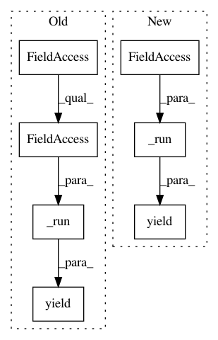

6dc2de29bacc30265e4cf54497f4caea7a484730,lib/streamlit/proxy/BrowserWebSocket.py,BrowserWebSocket,_handle_backend_msg,#BrowserWebSocket#Any#Any#Any#,155
Before Change
elif msg_type == "rerun":
if backend_msg.rerun.clear_cache:
caching.clear_cache()
yield self._run(backend_msg.rerun.command_line)
else:
LOGGER.warning("No handler for "%s"", msg_type)
except Exception as e:
LOGGER.error("Cannot parse binary message: %s", e)
After Change
if msg_type == "cloud_upload":
yield self._save_cloud(connection, ws)
elif msg_type == "rerun_script":
yield self._run(backend_msg.rerun_script)
elif msg_type == "clear_cache":
caching.clear_cache(True)
else:
LOGGER.warning("No handler for "%s"", msg_type)
In pattern: SUPERPATTERN
Frequency: 3
Non-data size: 7
Instances
Project Name: streamlit/streamlit
Commit Name: 6dc2de29bacc30265e4cf54497f4caea7a484730
Time: 2019-02-20
Author: tconkling@gmail.com
File Name: lib/streamlit/proxy/BrowserWebSocket.py
Class Name: BrowserWebSocket
Method Name: _handle_backend_msg
Project Name: streamlit/streamlit
Commit Name: 325df5d36f7ae1d2b34b9af93f666fc501c7709b
Time: 2019-02-11
Author: 44782696+aaj-st@users.noreply.github.com
File Name: lib/streamlit/proxy/BrowserWebSocket.py
Class Name: BrowserWebSocket
Method Name: _handle_backend_msg
Project Name: streamlit/streamlit
Commit Name: 5741bee8c7d87ca651d7e0d9dc157dd617d1eb93
Time: 2019-02-20
Author: tconkling@gmail.com
File Name: lib/streamlit/proxy/BrowserWebSocket.py
Class Name: BrowserWebSocket
Method Name: _handle_backend_msg